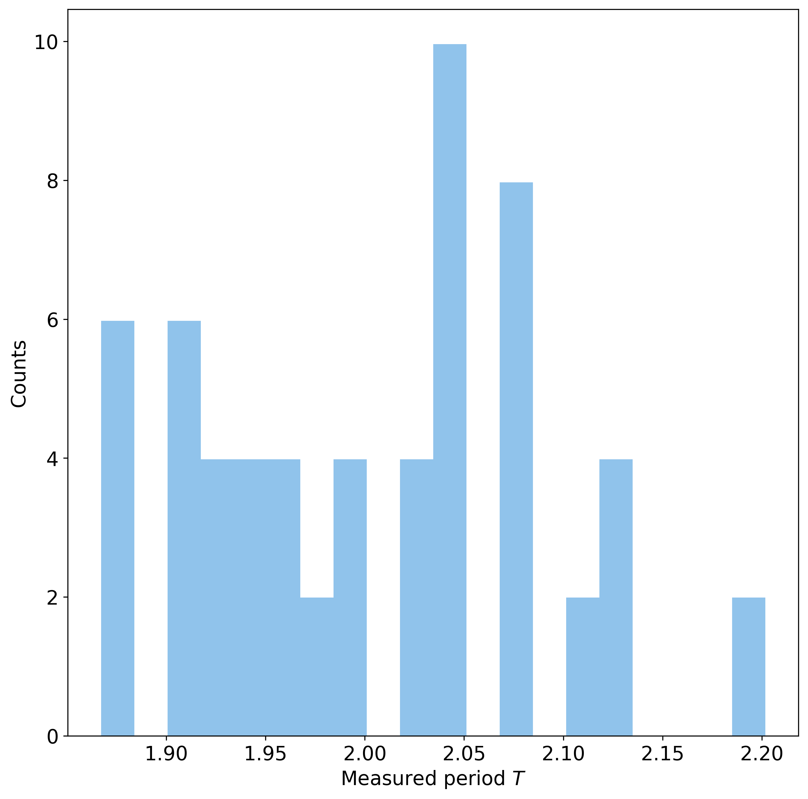
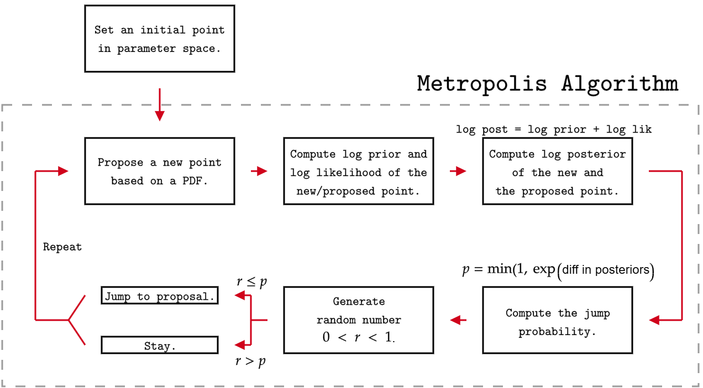
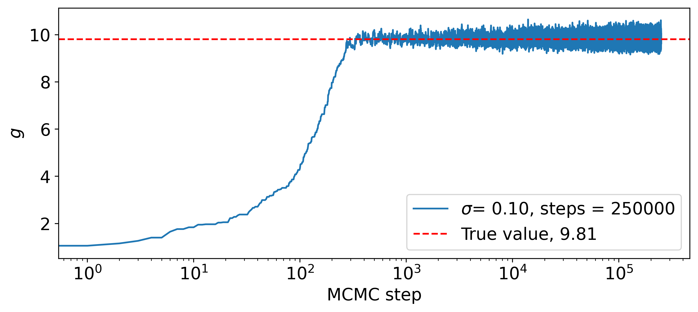
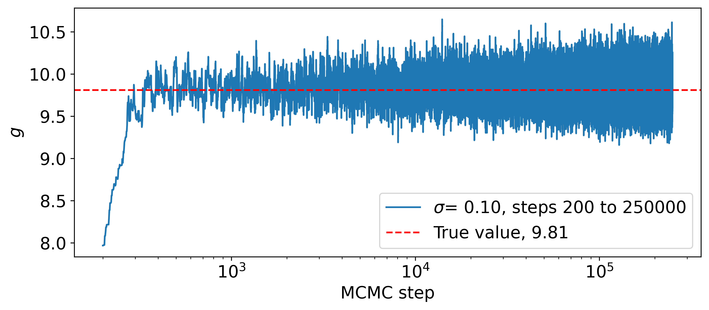
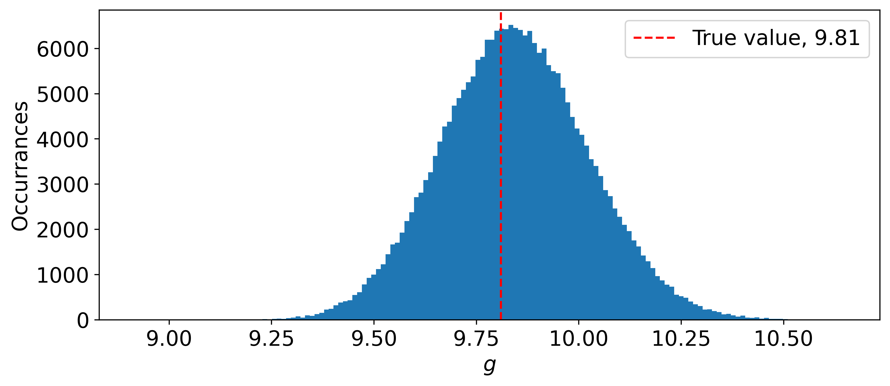

Fernando Garcia Cortez
Hands-on MCMC for beginners
Many times, when discussing my work with people outside my field, I’ve found it tricky to explain what Markov Chain Monte Carlo (MCMC) is and how it works in practice. In this post, I’ll walk you through a process called parameter estimation (using MCMC) without relying on advanced code libraries. I’ll assume you’re already familiar with a bit of Bayesian statistics—specifically the concepts of a prior, a likelihood, and a posterior. This post will focus on the simplest case of a Metropolis algorithm.
Consider the following situation: An alien species happens to know how pendulum's period (the time it takes to complete one full oscillation) is related to the local gravitational acceleration:
\[T=2\pi \sqrt{\frac{L}{g}}\;,\]where $L$ is the pendulum’s length. Unfortunately for them, the planet's atmosphere is extremely toxic, so their only option is to take measurements inside a cramped spaceship with minimal tools.
They could try to measure the pendulum's period a few times and use the formula to extract some estimation of $g$, but that would likely be imprecise. Measuring it millions of times would be more accurate, but also painfully tedious and time-consuming.
Instead, one clever research assistant proposes a smarter approach: take just a handful of measurements and use Markov Chain Monte Carlo (MCMC) to draw conclusions. After all, a computer can crunch numbers much faster than an alien can swing a pendulum.
The data set then consists of a set of measurements of the pendulum's period. For this calculation, we can assume that the alien's measurement device induces, effectively, normal noise on the measurement. Further, suppose that the aliens measured the period 25 times.
The dataset is generated synthetically by adding normally distributed noise to the true value. In other words, data points $T_i$ are generated using
\[T_i = T_{\text{true}}+\mathcal{N}(\mu = 0, \sigma = 0.5)\]The value of $L$ is kept constant and is assumed to have zero error (i.e., aliens know, for a fact, that their string is exactly 1 meter long.
The simplest implementation of an MCMC sampler comes in the form of the Metropolis Algorithm:
We must then specify 3 things:
(1) A (log) likelihood function. For this demonstration, I will be using normal (log) likelihood function.
(2) A (log) prior distribution. For this demonstration, I will be using a uniform (log) prior distribution.
(3) A proposal PDF. This PDF is used to propose new points around the current point in parameter space. I will be using a normal distribution centered at the current location in paramter space, with a fixed standard deviation $\sigma _{\text{prop}}$.
With words, suppose with start the algorithm with $g=1$. Then a new point is proposed (according to a PDF). Say $g=1.15$ is proposed as the new location. Then we can evalute their (log) prior and (log) likelihood. When computing the log-likelihood, we are testing the proposal against the observed data. Once the posteriors are computed, we are able to test whether we move to this proposed point or not. Regardless of this result, the algorithm continues until a predefined number of steps is achieved.
Click here to download a jupyter notebook with the code blocks used to generate the following results.
An evaluation function is defined to map a proposed parameter value to the type of values present in the observed values data set. In this case, we want to map a choice of $g$ to a pendulum's period.
def period(g):
return 2*np.pi*np.sqrt(L_true/g) # seconds
Similarly, we need to define a function that proposes new values in the parameter space. The assumption of a normal PDF as a proposal distribution has been baked into the function.
def gaussian_proposal(g_current,prop_sigma):
return g_current + np.random.normal(0,prop_sigma)
The (log) likelihood function makes use of the known standard deviation in the data set:
def log_likelihood(data,data_sigma,g):
N_data = len(data)
log_sum = np.sum((data - period(g))**2)
return -N_data*np.log(data_sigma*np.sqrt(2*np.pi)) -(1/(2*data_sigma**2))*log_sum
To construct a log uniform prior, we can use numpy's np.inf for out of bound values.
def log_prior(g):
if 0 <= g <= 20:
return 0
else:
return -np.inf
The most important function comes in the form of an MCMC step. An MCMC run consists of looping over this function a given number of times. Observe the way we decide whether a jump happens or not. The possible values of diff can lead to extremely small values once exponentiated. It is easier to take the log of the random tester value instead.
def MCMC_step(data,data_sigma,prop_sigma,g_current):
# propose a new value
g_proposed = gaussian_proposal(g_current,prop_sigma)
# Compute (log) posteriors (up to multiplicative factor)
log_current_posterior = log_prior(g_current) + log_likelihood(data,data_sigma,g_current)
log_proposal_posterior = log_prior(g_proposed) + log_likelihood(data,data_sigma,g_proposed)
diff = log_proposal_posterior - log_current_posterior
if diff >= 0: # Automatic acceptance
test = True
else:
if np.log(random.rand()) <= diff:
test = True
else:
test = False
return test, g_proposed
A standard MCMC run has the following structure:
N_steps = 250000
MCMC_g = 1 # m/s^2. This acts as the starting point.
MCMC_sigma = 0.1 # m/s^2. How wide the sampler will propose values around the current value.
chain = []
accepted = 0
time_i = time.time()
for step in range(N_steps):
acceptance, new_g = MCMC_step(measurements,sigma_T,MCMC_sigma,MCMC_g)
if acceptance:
MCMC_g = new_g
accepted += 1
chain.append(MCMC_g)
time_f = time.time()
print("The chain finished running.")
print(f" > Total time: {time_f-time_i:.4f} seconds")
print(f" > Acceptance rate: {accepted/N_steps:.4f}")
It is relevant to note that on my consumer-grade computer, 250,000 steps took 4 seconds to finish. By storing the chain steps, we are able to generate what we call a trace plot. These show us how our walker moved throughout the parameter space.
 Observe how it starts to move towards an equilibrium zone. It is common practice to remove the initial trail (known as the burn-in phase) used to get to this part of the parameter space. The true power of MCMC shows up when we plot histograms of our chains.
The normal shape is to be expected. At this point, we can use the chain trace to compute a mean and a standard deviation (that is, our estimate! at least for this toy model). Dropping the first 250 steps (for burn-in), we see that:
\[g=9.845 \pm 0.179\; \frac{\text{m}}{\text{s}^2}\]This estimate—like in any other MCMC analysis—can be improved by (1) collecting more real-world data and (2) running longer chains. In practice, MCMC analyses are rarely as smooth as this toy example. Complex problems often come with complicated parameter spaces! On top of that, each MCMC step can take longer to compute, turning the process of running chains into a full-day (or longer) task.
Another important step we didn’t cover here is running multiple (“parallel”) chains. After all, how do you know your walkers actually reached the right equilibrium region? And are you sure there’s only one? I’ll dive into these more challenging problems—and more sophisticated MCMC algorithms—in a future post.